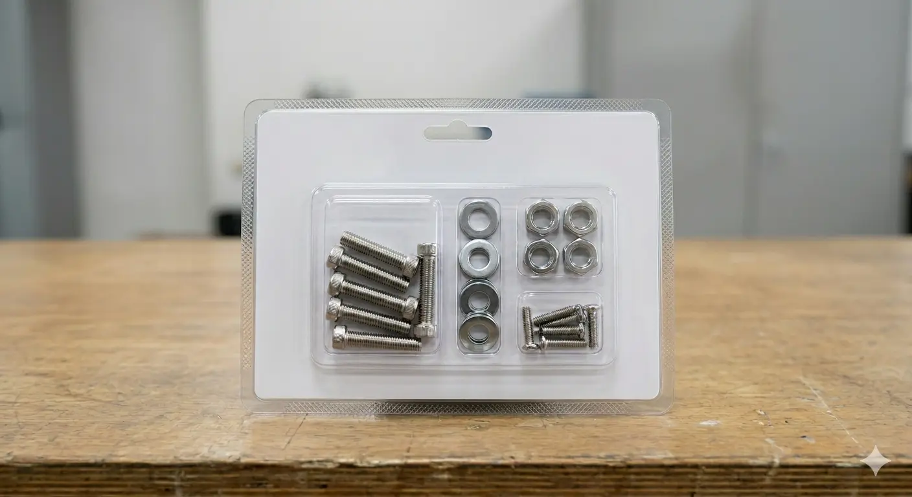
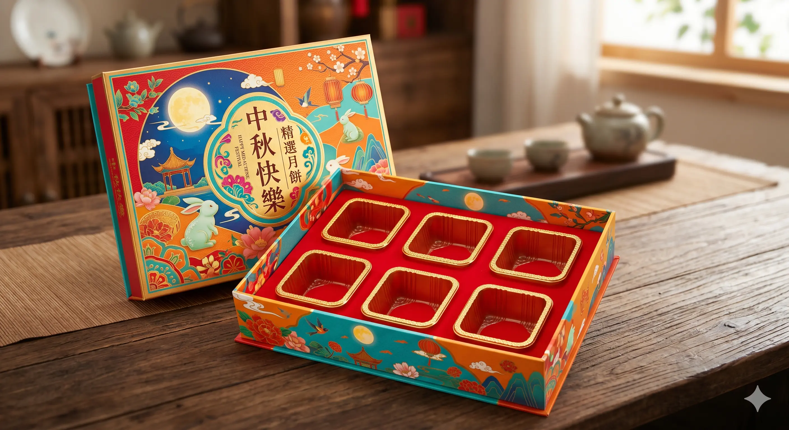
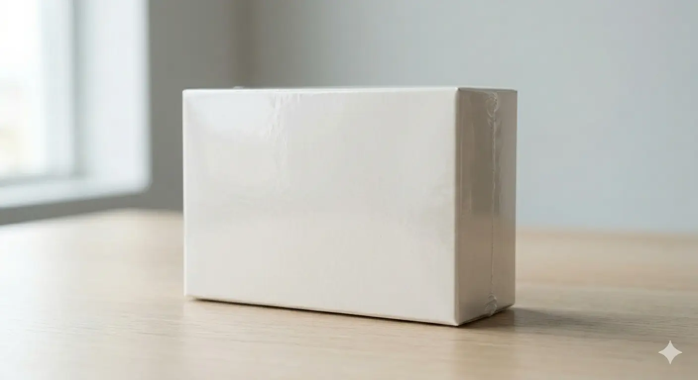
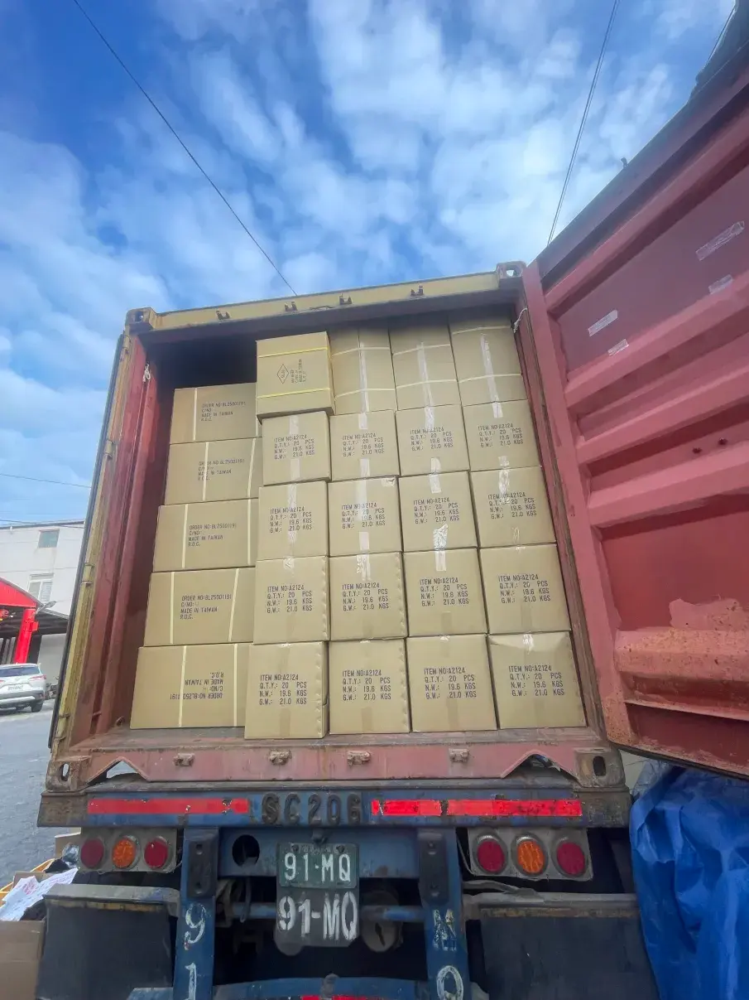

擁有完善自動化機械（封口、熱縮、高週波、泡殼機）與龐大精細手工團隊。不論是複雜的五金配件組裝、精緻零售禮盒入袋，或是跨國大單疊櫃，我們皆能提供嚴格品檢與精準交期。
我們深知 B2B 代工的痛點：怕交期延誤、怕品質不穩、怕加工廠空間不夠大。我們透過合理的廠區規劃與高度產能，解決您的所有擔心。
許多工業產品或精細五金，因為結構複雜，是全自動化機器無法完全替代的。我們擁有一批經驗老到、手速快且細心的手工代工團隊，無論是螺絲配件多件包裝、複雜的塑膠件卡扣組裝、貼標、套袋、折盒等，都能在短時間內組織強大產能，應付您的急單需求。
代工不只是做包裝，更是產品上市前的最後一道防線。我們在加工過程中，會依照客戶提供的品檢規範，嚴格執行外觀檢視、毛邊檢查、功能性抽驗或尺寸配對。幫您在包裝前直接挑出射出不良、刮傷、生鏽等瑕疵品，並分類點數歸還，確保大貨出廠到消費者手中零客訴。
不同於一般純手工包裝廠，我們配置了高功率高週波融合機與熱封泡殼機。能針對五金工具常見的「雙面泡殼塑膠熱熔固定」、「紙卡與泡殼熱封壓合」進行自動化加工。包裝後的產品堅固、防劃傷、防偷竊，完美符合各大美式賣場（如 Costco）與跨國超市的上架包裝規範。
我們的廠區腹地寬廣，擁有專業的裝卸貨平台。產品在廠內完成包裝、貼上外銷嘜頭後，可直接安排打棧板（卡板裹膜固定）或進行高密度的「貨櫃疊櫃（Container Stuffing）」作業。我們的疊櫃師傅經驗豐富，會精準計算空間，確保貨物塞滿且不易傾倒，幫您省下高昂的跨國海運運費。
無論大小訂單，皆採標準作業程序（SOP）生產，提供透明的加工費用與即時進度回報。
專門承接各類傳統五金、手工具、建築緊固件、汽車零配件、塑膠射出件的後加工處理。服務包含：多規格螺絲包套袋配對、金屬配件去毛邊、精密外觀品檢、說明書折疊置入、外盒貼標與條碼黏貼。製程中嚴密核對配重與數量，避免少配件漏件情況。

針對國內通路、電商平台、外銷市場的精裝禮盒提供完美代工。我們承接**已完成密封包裝之食品（如袋裝茶包、密封餅乾、瓶裝醬料等）**、美妝保養品、日常文具、生活百貨的禮盒組裝。包含內襯紙托/EVA折疊放置、商品定點置入、附贈文宣定位、絲帶綁紮以及外層封盒打包。

利用廠內多台高效能自動化機具，提供標準化的塑膠外包裝。自動封口機可進行大批量產品的高速L型封口；熱縮膜機（POF/PE）能讓收縮膜緊密貼合產品表面，達到絕對的防塵、防潮、防拆散效果。另有高週波與熱封泡殼機，可完美固定硬質吸塑紙卡包裝。

專為外銷型工廠與出口貿易商設計的延伸服務。從產品在廠內代工完畢開始，我們提供重型打棧板（膠膜加固裹包）、打包帶束緊，並由專業堆高機團隊操作，直接進行貨櫃裝載（20呎、40呎平櫃與高櫃皆可）。廠內亦提供寬敞乾淨的倉儲空間，供大貨出貨前的短期暫存。

我們引進多款標準化包裝設備，可配合不同產品尺寸與包裝材質需求。
| 機具設備名稱 | 加工適用材質/範圍 | 核心包裝功能 | 廠內配置 |
|---|---|---|---|
| 自動封口機 | POF, PE, PP 等各式包裝塑料膠膜 | 進行產品大批量、高效率的L型邊緣熱熔封口，確保封邊平整牢固。 | 多組配置 |
| 高效能熱縮機 | POF收縮膜、PVC/PE熱縮材料 | 透過精密控溫熱風隧道，使收縮膜完美貼合各類形狀之產品外盒。 | 量產線配置 |
| 高週波熔接機 | PVC, PET 雙面硬質塑膠吸塑泡殼 | 利用高頻電磁場使塑膠分子相互熔接，適合手工具等重型產品的硬殼防盜包裝。 | 專業規配置 |
| 熱封泡殼機 | 吸塑泡殼 + 後方塗膠印刷紙卡 | 透過瞬間高溫將正面透明塑膠殼與背面產品紙卡壓合，外觀美觀利於吊掛販售。 | 量產線配置 |
| 專業裝卸貨平台與堆高機 | 20呎/40呎/45呎 各型標準跨國貨櫃 | 廠區備有重型堆高機與平寬裝卸區，可迅速完成出貨棧板進櫃與高難度人工疊櫃。 | 全備配置 |
這裡整理了各大採購經理、貿易商最常詢問的製程與物流細節
A：我們擁有高度彈性的生產排程。一般來說，我們會根據產品的加工複雜度（純手工、需要開機具、或是需要打棧板疊櫃）來綜合評估。無論是大宗數十萬件的外銷長單，或者是數千件的通路試銷急單，我們都非常歡迎您帶樣品來廠討論，我們將盡力為您協調產線。
A：為了給您最精準、不浮誇的加工費報價，強烈建議您提供：(1) 產品實物樣品或詳細外觀照片。(2) 期望的包裝方式與包材材質。(3) 每批次的預估加工數量。(4) 是否需要廠內短期倉儲或協助疊貨櫃出口。若您在台中/中部地區，也非常歡迎直接預約帶著樣品來廠區洽談，當面試作最準確！
A：我們在每條手工與機械產線皆設有嚴格的 QC 自檢機制。當進料產品本身存在射出缺陷、刮傷、生鏽或變形時，我們的作業員會在包裝第一時間將其挑出。這些瑕疵品會被單獨集中、點數，並在出貨時完整交還給您，絕對不會將瑕疵品裝入成品包裝中。
A：是的！這是我們廠區的一大核心亮點。我們廠區腹地規劃完善，聯外道路寬敞，**20呎、40呎等大型貨櫃車、聯結車皆可輕鬆進出與迴轉**。我們擁有豐富的外銷疊櫃經驗，能根據紙箱材積進行最緊密的無縫排列疊櫃，並確實拍發照片紀錄，讓您的跨國物流對接極度流暢。
A：我們主要專注於提供優質、高效率的「代工人力與包裝機具操作（代工包裝）」，原則上包材由客戶自行提供最符合您的預算。但如果您沒有配合的包材廠，我們在業界擁有許多長期合作、品質優良的紙盒印刷廠、塑膠泡殼廠與熱縮膜供應商，我們非常樂意為您引薦對接，協助您一體化搞定。
歡迎點擊電話直接通話，或複製下方詢價格式利用電子郵件寄送給我們，我們將於 24 小時內由專人回覆您。
中部優質包裝代工與外銷疊櫃基地
🏢 工廠全銜： 【瀚瑩包裝物流商行】
📍 廠區地址： 台灣台中市西屯區中清路三段215巷22號
📞 工廠電話： 04-24255022
📱 負責人手機： 0928-416718
✉️ 官方信箱： blackpink7442@gmail.com
💬 LINE 專賴： 【0928416718】
您可以直接複製下方文字，修改後寄到我們的信箱，或直接點擊下方按鈕以 LINE 發送給我們：